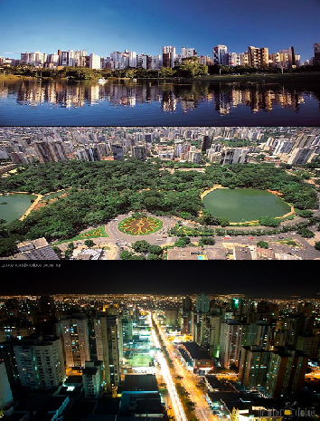

Hi, my name is Danielly Cardoso Pereira. You might think that I am one of the typical UW student you see around, but actually, there is a little bit more about me that you might have not guessed. Well, you probably have guessed I am Russian, I know, thats what everyone thinks when they look at me haha. The interesting thing is.... I AM NOT :-)

I was born and raised in the beautiful city of Goiania, Brazil. There I lived most of my life until I moved with my family to the United States at the age of 15. What a change! I had to learn English from scratch, but what a relief it was to finally after long hours of study be able to speak English. Learning English was challenging but very rewarding.After becoming more comfortable with speaking English I decided to take on another challenge, learn another language, because why not. Spanish became my next choice. I studied it for 3 years and simply loved it. Now it think its time to learn a new language again.
Click here to go to my Interest page to find out what's my next challenge :-)